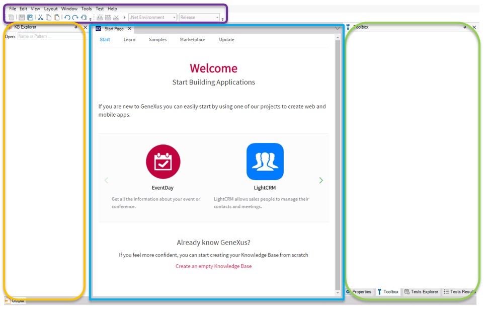

GeneXus provides an intuitive and consistent User Interface, IDE.  It is divided into windows, toolbars and the main menu. Also, you can control docking behavior by clicking on the pin button. In this way, you could also fix them in one position or arrange them differently on the screen. After creating the KB, the IDE content changes. For example, in the KB Explorer window, a tree structure will be created. Its root will be the name of the Knowledge Base given by you and below it will appear the GeneXus objects that you are going to define.
|